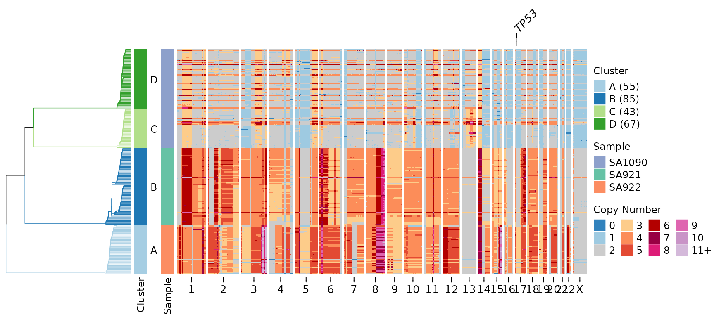
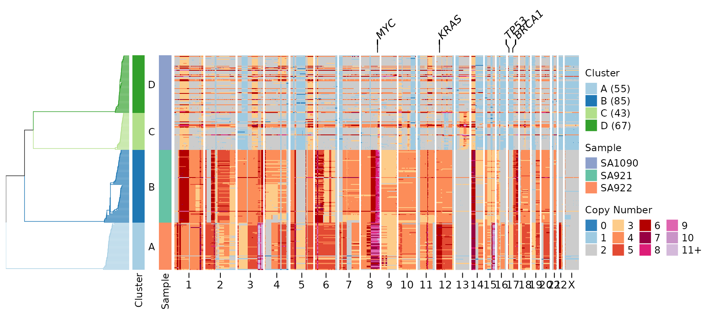
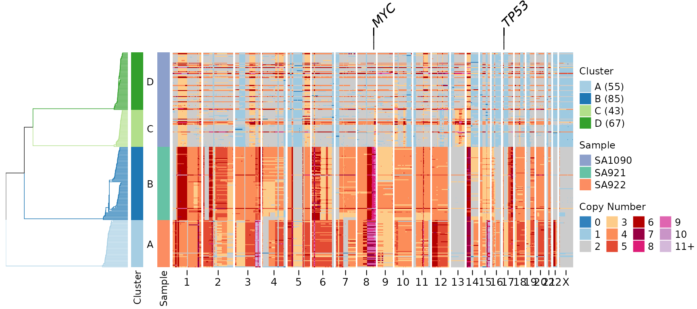
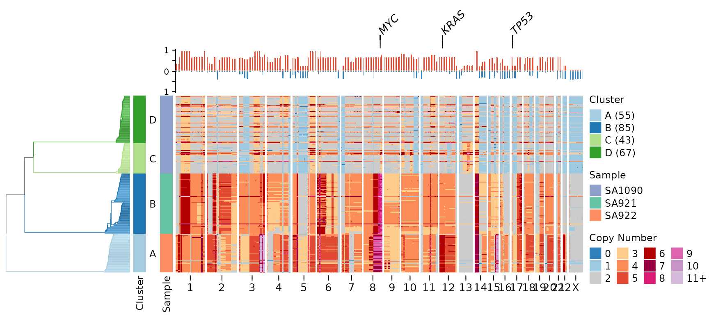
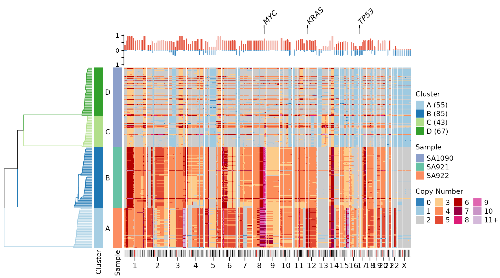
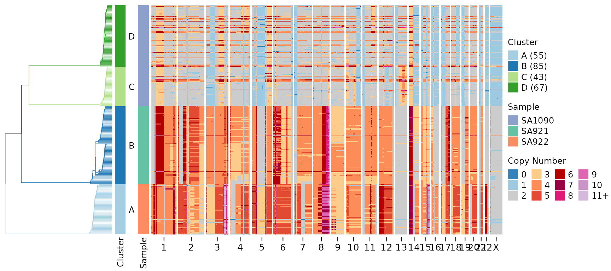
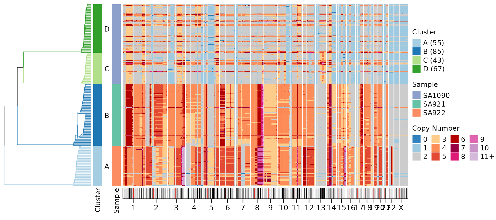
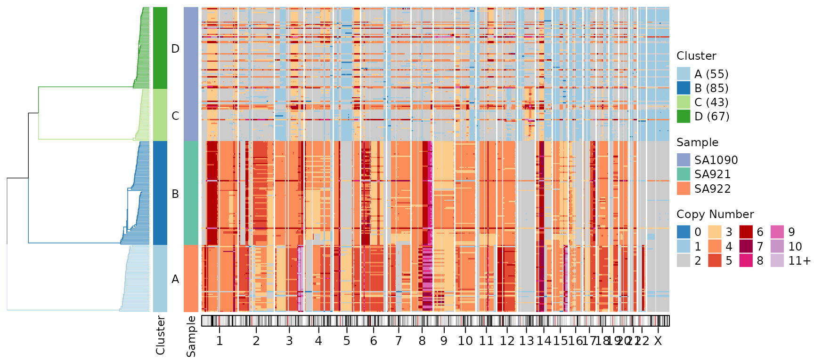
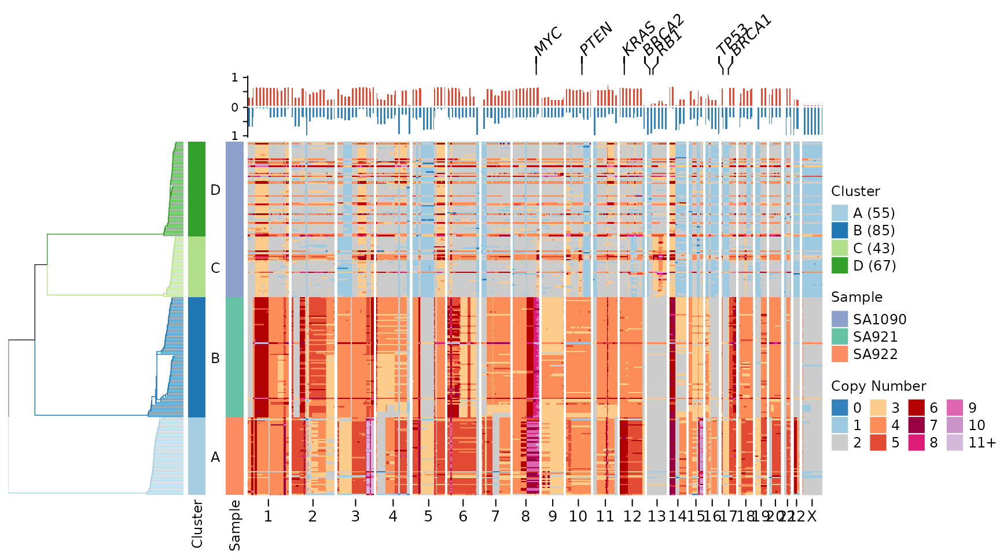
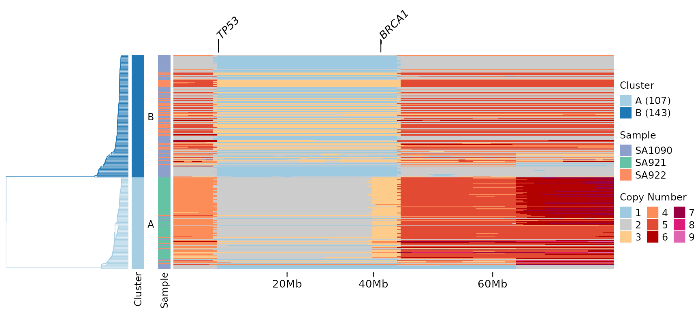

Advanced Heatmap Visualization
heatmap_visualization.RmdIntroduction
The signals package provides powerful heatmap
visualization capabilities for copy number data.
- Gene annotations: Highlight specific genes of interest at the top of the heatmap
- Chromosome ideogram: Display cytoband patterns and centromeric regions
- Full genome visualization: Show all genomic bins including centromeric regions
These features work with any copy number data, not just haplotype-specific or allele-specific calls. This makes them useful for visualizing total copy number profiles from any single-cell DNA sequencing technology.
Setup and Data
We’ll use the included CNbins test data, which contains
copy number calls for 250 cells across all human chromosomes. First,
let’s load the data and create a clustering for organized heatmap
visualization.
data(CNbins)
CNbins <- CNbins %>% filter(chr != "Y")
head(CNbins)
#> chr start end reads copy state cell_id
#> 1 1 2000001 2500000 536 2.960868 2 SA921-A90554A-R03-C44
#> 2 1 3000001 3500000 499 2.603584 2 SA921-A90554A-R03-C44
#> 3 1 4000001 4500000 569 2.216388 2 SA921-A90554A-R03-C44
#> 4 1 4500001 5000000 524 2.039672 2 SA921-A90554A-R03-C44
#> 5 1 5000001 5500000 576 2.210792 2 SA921-A90554A-R03-C44
#> 6 1 5500001 6000000 516 2.028686 2 SA921-A90554A-R03-C44
clustering <- umap_clustering(CNbins, field = "copy")The umap_clustering() function performs UMAP
dimensionality reduction followed by HDBSCAN clustering. This produces a
phylogenetic tree and cluster assignments that organize cells by
similarity.
Basic Heatmap (Baseline)
Let’s start with a standard heatmap.
plotHeatmap(CNbins,
tree = clustering$tree,
clusters = clustering$clustering)
This heatmap shows copy number states across all genomic bins (columns) and all cells (rows). Cells are organized by the hierarchical clustering tree (displayed on the left). The color scheme represents copy number states, with blue indicating losses and red indicating gains.
Gene Annotations
The gene_annotations parameter highlights specific genes
of interest on the heatmap. This is useful for focusing on known
cancer-associated genes or other loci of biological significance.
Single Gene Annotation
Let’s highlight the TP53 tumor suppressor gene:
plotHeatmap(CNbins,
gene_annotations = "TP53",
tree = clustering$tree,
clusters = clustering$clustering)
A line connecting the gene label to its genomic position appears above the heatmap. This makes it easy to identify where specific genes are located relative to the copy number changes.
Multiple Gene Annotations
We can highlight multiple genes simultaneously:
plotHeatmap(CNbins,
gene_annotations = c("TP53", "MYC", "KRAS", "BRCA1"),
tree = clustering$tree,
clusters = clustering$clustering)
Customizing Gene Labels
You can adjust the appearance of gene annotations:
plotHeatmap(CNbins,
gene_annotations = c("TP53", "MYC"),
gene_annotation_fontsize = 12,
gene_link_height = 8,
tree = clustering$tree,
clusters = clustering$clustering)
Key parameters: - gene_annotation_fontsize: Controls the
size of gene labels (default uses annofontsize) -
gene_link_height: Height of connector lines in mm (default
is 5 mm)
Gene Annotations with Frequency Plot
Gene annotations can be combined with other annotations like the frequency plot, which shows how many cells have copy number changes at each genomic position:
plotHeatmap(CNbins,
gene_annotations = c("TP53", "MYC", "KRAS"),
plotfrequency = TRUE,
frequencycutoff = 2,
tree = clustering$tree,
clusters = clustering$clustering)
In this visualization: - Gene labels appear at the very top - Below that is the frequency plot showing recurrence of copy number changes - The heatmap shows individual cell profiles
Chromosome Ideogram Visualization
The plotideogram parameter adds a visual representation
of chromosome structure at the bottom of the heatmap, including cytoband
patterns and centromeric regions.
⚠️ Important: The plotideogram
parameter requires plotallbins = TRUE to display all
genomic bins including centromeric regions.
plotHeatmap(CNbins,
plotallbins = TRUE,
plotideogram = TRUE,
tree = clustering$tree,
clusters = clustering$clustering)The ideogram shows: - Chromosome bands: Different cytogenetic regions (displayed as colored bands) - Centromeric regions: Light grey areas where coverage is typically low or absent - Chromosome structure: Provides genomic context for interpreting copy number changes
Combining All Features
Here’s the complete visualization combining all new features:
plotHeatmap(CNbins,
gene_annotations = c("TP53", "MYC", "KRAS"),
plotallbins = TRUE,
plotideogram = TRUE,
plotfrequency = TRUE,
frequencycutoff = 2,
tree = clustering$tree,
clusters = clustering$clustering)
This comprehensive visualization shows: 1. Top: Gene labels for key cancer-associated genes 2. Upper middle: Frequency plot showing recurrent copy number changes 3. Center: Individual cell copy number heatmap 4. Bottom: Chromosome ideogram with cytoband and centromere information
This arrangement provides multiple levels of information: individual cell profiles, population-level recurrence patterns, genomic context, and functional annotation (genes).
Customization Options
Genome Assembly
By default, the package uses hg19 (GRCh37) for gene positions and cytoband information. You can switch to hg38 (GRCh38):
plotHeatmap(CNbins,
gene_annotations = "TP53",
genome = "hg38",
tree = clustering$tree,
clusters = clustering$clustering)
Ideogram Height
Adjust the height of the ideogram annotation:
plotHeatmap(CNbins,
plotallbins = TRUE,
plotideogram = TRUE,
ideogram_height = 0.5,
tree = clustering$tree,
clusters = clustering$clustering)
The ideogram_height parameter specifies height in cm
(default is 0.3 cm).
Centromere Color
Customize the appearance of centromeric regions:
plotHeatmap(CNbins,
plotallbins = TRUE,
plotideogram = TRUE,
centromere_col = "#E0E0E0",
tree = clustering$tree,
clusters = clustering$clustering)
Practical Use Cases
Cancer Genomics
Highlight common tumor suppressors and oncogenes:
cancer_genes <- c("TP53", "RB1", "PTEN", "BRCA1", "BRCA2", "MYC", "KRAS", "PIK3CA")
plotHeatmap(CNbins,
gene_annotations = cancer_genes,
plotfrequency = TRUE,
frequencycutoff = 3,
tree = clustering$tree,
clusters = clustering$clustering)
Focused Chromosomal Region
Display a specific chromosome with gene annotations:
# Filter to chromosome 17
CNbins_chr17 <- CNbins[CNbins$chr == "17", ]
clustering_chr17 <- umap_clustering(CNbins_chr17, field = "copy")
plotHeatmap(CNbins_chr17,
gene_annotations = c("TP53", "BRCA1"),
tree = clustering_chr17$tree,
clusters = clustering_chr17$clustering)